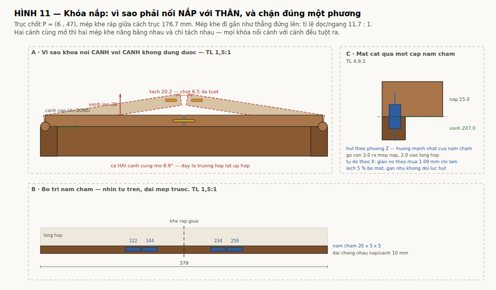

tools/lid_latch.py. Hình: figs/fig11-khoa-nap. Trị số: tools/box_spec.py.Khóa nắp = 8 cặp nam châm khối 20 × 5 × 5 nối NẮP với THÂN. Không có chi tiết chuyển động, không nhìn thấy, không phải thao tác khi mở. Hệ số an toàn 1,5× so với đặc tính "giữ được hộp lật úp hoàn toàn với hệ số động 3" — tức 4,6× so với tải tĩnh.
Phần đáng đọc không phải con số đó mà là vì sao mọi cách khóa hiển nhiên đều sai.
Trục chốt bản lề P = (6,1 , 47) — lùi vào 6,1 từ mặt ngoài vách, ở cao độ vành; không phải ở giữa bề dày nắp (xem docs/DONG-HOC-BAN-LE.md; bản lề là mắt mộng gỗ, không kim loại). Mép khe ráp giữa cách trục 176,7 mm. Quay cánh một góc nhỏ θ, mép khe đi gần như thẳng đứng lên: tỉ lệ dọc/ngang 11,7 : 1.
Điều đó sinh ra hai kiểu mở với hai chuyển động tương đối khác hẳn nhau:
| Kiểu | Chuyển động tương đối giữa hai mép khe | Phải chặn |
|---|---|---|
| (a) Một cánh mở | mép khe cánh đó nâng lên so với cánh kia | phương Z |
| (b) Hai cánh cùng mở | hai mép nâng bằng nhau, chỉ tách nhau | phương X |
Kiểu (b) không hiếm. Lật úp hộp là kiểu (b) — trọng lượng hai cánh kéo chúng mở cùng lúc. Đó là trường hợp thường gặp nhất, và nó vô hiệu hoá mọi thứ chỉ chặn phương Z.
Hệ quả: một cái chốt trượt ngang xuyên từ cánh này sang cánh kia — thứ ai cũng nghĩ tới đầu tiên — không khóa được, vì kiểu (b) rút nó ra đúng theo trục của nó.
| Chốt ăn sâu | Tuột khi mỗi cánh mở | Khe đã vênh lên |
|---|---|---|
| 5,0 | 7,5° | 23 mm |
| 6,5 | 8,9° | 27 mm |
| 8,0 | 10,0° | 30 mm |
| 12,0 | 12,8° | 38 mm |
Đặt chốt cao hay thấp cũng không cứu được. Với chốt ăn sâu 6,5, khe vênh 22 mm nếu chốt sát mặt trên nắp, 27 mm ở giữa bề dày, 33 mm nếu sát mặt dưới. Không có cao độ nào cứu được.

Mỗi cánh nắp có 68 mm gỗ ngang thớ nằm trong chuỗi bề rộng (hai đố dọc 34 mm; tấm Nu thả nên không đóng góp). Ở ΔMC 5 % mỗi cánh nở 0,54 mm → khe ráp giữa đóng lại 1,09 mm.
Bất kỳ khóa nào nối hai cánh với nhau đều phải có 1,09 mm rơ theo X để còn lắp được quanh năm. Mà 1,09 mm rơ đó, theo mục 1, cho mỗi cánh mở 2,7° và khe vênh lên 8,5 mm — ngay cả khi chốt còn nguyên trong ổ.
Hai mục đầu cộng lại cho một kết luận cứng:
Đúng một loại chi tiết thoả cả hai: thứ ép xuống mà trượt tự do ngang.
Trường hợp thiết kế: lật úp hộp hoàn toàn. Trọng lượng cánh nắp và toàn bộ ruột hộp đều đè lên mặt trong của nắp và cố xoay nó ra.
| Thành phần | kg | Tay đòn | N·mm |
|---|---|---|---|
| Trọng lượng một cánh nắp | 0,65 | 88 | 565 |
| 2 khay quân đầy trong một khoang | 1,59 | 79 | 1 234 |
| Nửa khay phụ kiện + quân Joker | 0,39 | 183 | 703 |
| Tổng mô men quanh trục xoay | 2 502 |
Bốn điểm giữ mỗi cánh, tay đòn 116 và 138 mm ở cả hai đầu hộp, tổng tay đòn 508 mm:
Đặc tính chốt: giữ được hộp lật úp hoàn toàn với hệ số động 3.
| Nam châm | khối 20 × 5 × 5, N45, mạ Ni |
| Số lượng | 4 mỗi cánh × 2 cánh = 8 cặp |
| Vị trí X | 122 và 144 trên cánh trái; đối xứng trên cánh phải |
| Vị trí Y | 5,5 — nằm trong dải 10 mm mà nắp và vành thân còn chồng lên nhau |
| Gỗ còn lại | 3,0 mm ra mép nắp, 2,0 mm vào lòng hộp |
| Hốc âm | 20,2 × 5,2 × sâu 5,2; dán epoxy; mặt nam châm thụt 0,1 dưới bề mặt |
| Đối ứng | nam châm thứ hai, không dùng đĩa thép |
| Dày nắp còn lại | 9,8 mm |
| Khối lượng thêm | 60 g |
Vì sao hợp: nam châm hút theo phương Z — đúng hướng mạnh nhất của nó — và hoàn toàn tự do theo X. 1,09 mm giãn nở theo mùa chỉ làm lệch 4 % bề mặt, gần như không đổi lực hút. Đó chính xác là thứ mục 2 đòi hỏi.
Vì sao không dùng đĩa thép đối ứng: thép sẽ rỉ trong khí hậu ẩm, và cocobolo nhiều dầu làm khó phát hiện vết rỉ sớm.
| Kiểm | |
|---|---|
| Yêu cầu mỗi điểm (hệ số động 3) | 14,8 N |
| Lực kéo một cặp, tiếp xúc trực tiếp | 30,0 N |
| Sau khi tụt do lớp hoàn thiện (−25 %) | 22,5 N |
| Hệ số an toàn | 1,5× |
| Tổng lực giữ một cánh | 90 N |
Hệ số 1,5 đó nằm trên hệ số động 3 rồi. So với tải tĩnh khi lật úp hoàn toàn, biên là 4,6 lần. Nhưng 1,5 không còn chỗ để sai nếu mẫu đo không đạt: tay đòn nam châm bị chặn trên bởi ba khe luồn ngón (dải 50 mm quanh X = 85, 189, 293), nên không thể đẩy nam châm ra xa hơn 144 để ăn gian bằng tay đòn. Hốc âm sâu 16 làm hộp nặng thêm và đẩy hệ số từ 1,6 xuống 1,5 — vẫn trong ngưỡng, nhưng bắt buộc phải đo mẫu thật trước khi chốt cỡ nam châm.
Nam châm không làm được ba việc, phải nói rõ với khách:
Cũng phải nối nắp với thân và chỉ chặn Z, y như nam châm. Hình thức khả thi duy nhất là lưỡi gài lật qua mép nắp: xoay lên đè lên mặt nắp, xoay xuống thì nằm áp vào mặt vách.
| Vị trí | X = 100 và 270, trên mặt ngoài vách trước |
| Vì sao không ở giữa | khe ráp giữa X = 185 nằm giữa dải hốc âm 125…245; lưỡi gài khi mở sẽ thõng xuống hốc, vướng tay |
| Vì sao đủ một cái mỗi cánh | giữ bất kỳ một điểm nào của cánh là cánh đó không xoay được nữa — động học chỉ có một bậc tự do |
| Đế bắt mã | vách trước dày 10, vành ở Z47; hốc âm nằm ở vách trái/phải nên mặt trước còn trống |
| Đế | brass 40 × 12 × 3, hạ bậc 3 mm vào mặt vách |
| Trục xoay | chốt brass Ø3, trục chạy theo X, ở Z40 |
| Lưỡi gài | brass dày 3, vươn ra 20, đầu lưỡi đè lên mặt nắp 10 mm |
| Hạ bậc trên nắp | 10 (Y) × 34 (X) × sâu 3,2 → lưỡi phẳng với mặt nắp |
| Giữ vị trí | vòng ép sóng ở trục cho ma sát ~0,3 N·m; lưỡi đứng yên ở cả hai vị trí, không cần lò xo |
Kiểm: một khóa mỗi cánh, tay đòn 100 mm. Lực trên lưỡi ở hệ số động 3 là 77 N → uốn lưỡi 15 MPa (hệ số 17×), ép mặt gỗ dưới lưỡi 0,23 MPa (hệ số 62×).
Đổi lại: hai chi tiết chuyển động quay lại vào thiết kế — đúng cái mà phương án C vừa bỏ đi. Và phải thao tác mỗi lần mở hộp.
| Nam châm | Khóa gài brass | |
|---|---|---|
| Chi tiết chuyển động | 0 | 2 |
| Chi tiết mòn | không | trục xoay |
| Phải thao tác khi mở | không | có |
| Nhìn thấy | không | có |
| Hệ số an toàn khi lật úp | 1,5× (lực hút) | 17× (bền lưỡi gài) |
| Khóa chống mở | KHÔNG | KHÔNG — không có chốt |
| Chống xóc / lạch cạch | có | có, và ép chặt hơn |
| Chịu được giãn nở theo mùa | có | có |
| Khối lượng thêm | 60 g | ~60 g |
| Rủi ro chế tạo | thấp | trung bình |
Khuyến nghị: nam châm. Phương án C được chọn vì "không cơ cấu, không chi tiết mòn". Gắn lại hai cái khóa gài là phá chính lý do đã chọn nó.
Chọn khóa gài brass nếu khách đòi một khóa nhìn thấy được — đó là quyết định về sản phẩm, không phải về kỹ thuật. Lúc đó làm cả hai: nam châm giữ hàng ngày, khóa gài làm chi tiết trang trí và chốt vận chuyển.
Nam châm và khe luồn ngón nhấc khay cùng ăn vào vành vách trước/sau, nên chúng ép nhau. Bản dựng hình 3D bắt được va chạm này khi mô hình đầu tiên đặt nam châm ở X = 128 và 169 — cả hai đều nằm trong băng khe luồn ngón.
Sau khi hốc âm hai tay chuyển sang vách trái/phải, cả ba khe luồn ngón đều tồn tại (rộng 50, ở X 81, 185, 293). Băng trống trên cánh trái là X 110…164, đủ chỗ cho hai nam châm ở 122 và 144, tay đòn 116 và 138 mm (trục xoay nay ở X = 6,1).
box_spec.selfcheck() nay kiểm chéo cả ba: nam châm ↔ khe luồn ngón, nam châm ↔ nam châm, và khe luồn ngón ↔ hốc âm hai tay.
docs/KHOA-NAP.md bang tools/md2html.py. Moi tri so sinh tu tools/box_spec.py.